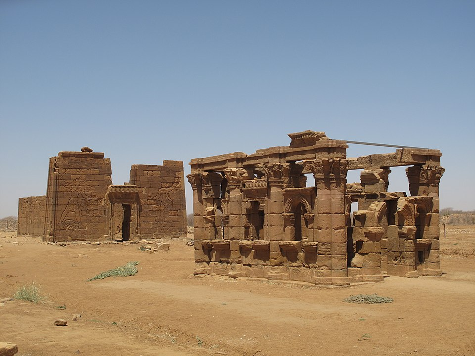
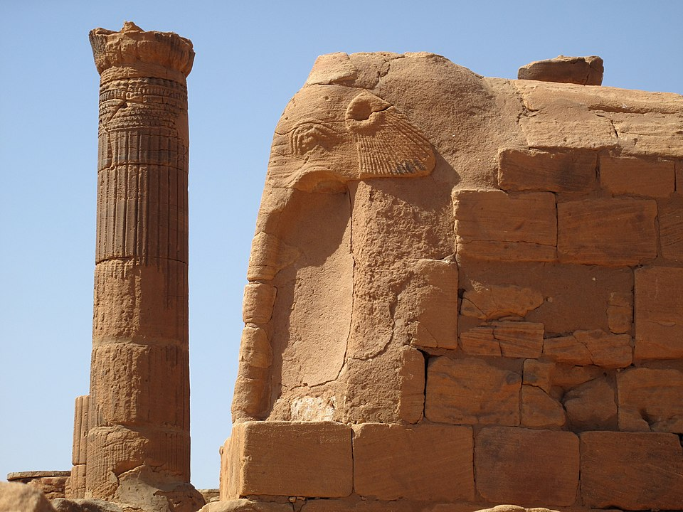

Downstream from the sixth cataract of the Nile, a little away from the river, in the middle of a desert plain, rise strange pyramids with steep edges. It was there, in Meroe, in the heart of Sudan, that the kings of the first known civilization of black Africa were buried. Called Kush by the Bible, Ethiopia by the Greeks and Romans, the Meroitic kingdom, which occupied from the third century BC to the fourth century AD an immense territory from Philae to Khartoum, had nothing to envy its neighbors to the north, these Egyptians then subject to Greek and then Roman domination, as Claude Rilly, co-author of the Répertoire d'épigraphie méroïtique (Académie des Inscriptions et Belles-Lettres-2000), explains below.
A rich civilization, heir to a very ancient culture
The Meroites possessed an efficient administration, feared armies, constantly embellished temples, an ingenious writing system, and a prosperous agriculture. And above all, they held the only land trade routes linking the Mediterranean world to sub-Saharan Africa, the trails along which caravans transported gold, ivory, ebony, panther skins, ostrich feathers, monkeys, and wild animals passed.
What we call Meroitic civilization is in fact only the last stage of a much older culture. From 2200 to 1550 BC, the kingdom of Kerma, which dominated the Nile Valley between the Third and Fourth Cataracts, was already, according to the most recent research, a Proto-Meroitic language. The Pharaonic conquest under the 18th Dynasty put an end to this indigenous power. However, it was revived seven centuries later with the withdrawal of the Egyptians; a new kingdom then developed around the religious metropolis of Napata, on the present site of Jebel Barkal.
In 730 BC, the Kushite king Piankhy seized Egypt "in the name of Amun," and the stunned peoples of the Near East soon saw these haughty warriors from the heart of Africa triumph as far away as Palestine, as the book of Isaiah testifies. For nearly sixty years, the 25th dynasty, known as the "Ethiopian," whose names are undeniably Meroitic, reigned over the land of the Pharaohs, before being driven out by the Assyrian invasions. From then on, withdrawn to the middle Nile, the Kushites perpetuated an original civilization, called the "kingdom of Napata," where Egyptian influences mingled with indigenous traditions. Around 300 BC, the necropolis of the sovereigns was transferred from Napata to Meroe, three hundred kilometers to the south. It is from this period that we truly speak of Meroitic civilization, even if it is the same culture, the same dominant ethnic group and the same institutions as before. The first specialists based their work on the mythical story reported by the Greek historian Diodorus Siculus, according to which the philhellenic king Ergamenes (Arkamani in Meroitic) put to death the priests who, until then, had had control over the State and even over the life of the sovereign. It was believed that it was to distance the clergy of Napata from royalty that he had then established his capital at Meroe. Today, it is rather thought that this change corresponds to the advent of a dynasty originating from the South. The new kings also concentrated their construction efforts on the southern region, without neglecting the rest of the kingdom.

A specific religion and writing, even if they incorporate Egyptian elements
Formerly local deities received royal worship: Apedemak, the lion-headed god, giver of life and protector of the new dynasty, now had his temples in Naga and Musssawarat, northeast of Khartoum. Other gods and goddesses, unknown to the Egyptians, were also honored: Sebioumeker, depicted as a pharaoh wearing a double crown, Amesemi, Apedemak's consort, represented with frizzy hair crowned with a falcon, strongly African features and cheeks slashed with ritual scarifications. The Egyptian deities, however, retained the favor of the Meroites: Amun, Mut, Horus, Hathor, Bes were still the object of fervent adoration. The considerable development of the cult of Isis that the Mediterranean world experienced also affected Meroe; its main sanctuary at Philae, on the border with Egypt, is frequented assiduously by pilgrims from Kush.
The creation of its own writing system transcribing the indigenous language is another characteristic of Meroitic civilization. The pharaohs of the 25th Dynasty, and after them the kings of Napata, used the Egyptian language and writing for their inscriptions. It was from the 2nd century BC that a specific writing system appeared in Kush, comprising twenty-three characters in two forms: one hieroglyphic, rare and reserved for royal or religious use, the other cursive, widely used by all levels of society. Because of the limited number of signs, it was long believed that they composed an alphabet, and a foreign influence has even been suggested. We now know that it was in fact a simplified syllabary, very close to the system used in India or Tibet, but developed locally.
The cursive characters derive from demotic, the stylized script of late Egypt, as it appeared in the 3rd century BC. As for the hieroglyphs, they correspond to a choice, sometimes confusing, made later in the Egyptian repertoire to provide the kings of Meroë with a sacred script.
The decipherment of the Meroitic script, after sixty years of fruitless attempts, was achieved in 1911 by the brilliant British Egyptologist Francis Llewelyn Griffith, but an acute problem quickly arose: the idiom that could now be read was incomprehensible, and bore no illuminating relationship to the ancient or modern languages known in this part of Africa. For almost a century, the research of Griffith, then of the Germans, and finally of Professor Leclant's French team, has led to only limited progress. Of the approximately one thousand texts currently known, only the funerary inscriptions are relatively well understood. Research continues because of the historical and linguistic challenges that a possible translation would represent, but it is not known whether it will ever be successful. No major bilingual document has yet been unearthed. The Meroitic language, the "Etruscan of Africa," is one of the most difficult enigmas left to us by ancient civilizations.

Troubled relations with its powerful northern neighbor
During the reign of the Ptolemies, the Meroitic territory frequently remained the last refuge for rebels who stirred up revolts in Upper Egypt, and occasionally received logistical support from the rulers of Kush.
The response of the Hellenistic kings was often brutal: in 185 BC, Ptolemy V not only reconquered the Thebaid, lost for twenty years, but took advantage of the situation to annex a large part of Lower Nubia. The first contact with the Roman armies was even worse. In 25/24 BC, the Meroites attacked Aswan, under the leadership of their king. It seems that the monarch died soon after, and the Roman response, led by the prefect of Egypt, Gaius Petronius, faced the armies of his successor, a one-eyed "candace" according to classical historians (perhaps Queen Amanirenas). The exact meaning of this title, usually translated as "queen mother," is unknown, but it is known that on several occasions, women, referred to in official texts as "candace" (kdke) and "sovereign" (qore), ascended the throne of Meroe. The victory of the Romans, better armed and better organized, was complete, and Meroite ambassadors had to meet Augustus at Samos in 21/20 BC. The emperor apparently showed clemency, and a certain cohabitation was established for a long time in the region of Philae between the Roman authorities of Egypt and those of Meroe. We only know the events from Greek or Latin texts, which are necessarily biased. It has been assumed that the large stele of Amanirenas and Akinidad, found near Meroe, relates the same war, and could therefore provide us with the testimony of the opposing camp. Unfortunately, our poor knowledge of the Meroitic language does not allow us to understand its content. After these events, the kingdom of Kush lived for more than two hundred years of relative peace.
Kings and queens come and go, often just a name on a funeral offering table or the decoration of a pyramid. Candace Amanishakheto, who succeeded Amanirenas and reigned at the time of Christ, shines with a special brilliance for us: her treasure trove of jewels, found in her pyramid at Meroe by an Italian adventurer, is currently on display in Munich and Berlin.
At the end of the 3rd century, the Meroitic "viceroys" (peseto) of Lower Nubia had their work cut out for them to stem the frequent invasions of desert peoples, the Blemmyes and Nobades, ancestors of the modern-day Bedja and Nubians. The end of Meroe is still poorly understood. Around 350, Ezanas, the king of Aksum, claims on two stelae that he victoriously fought the Noba (Nubians), crossing the former territory of the Kasu (Kushites). It has been concluded that at this time, the kingdom of Meroe had succumbed to the blows of the Nubians, the Abyssinians having merely completed the work. However, recent excavations at El-Hobagi, near the Sixth Cataract, seem to show that the Meroitic civilization survived for some time after the passage of Ezanas. The glory of Meroe, however, was over, the ancient rulers forgotten, and in the plundered burial chambers of the royal pyramids, the sand began to flow gently.
Claude Rilly/Clio 2001